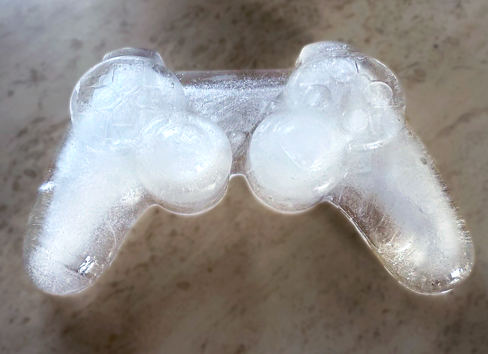

MELTDOWN - Discursive Design
MELTDOWN explores the relationship between control, reward and player behaviour. A game controller promises control, but what happens when that control slowly slips away? I designed a functional game controller made entirely of ice. As players continue to play, the controller gradually melts, becoming increasingly uncomfortable and difficult to hold. Despite this, the desire to keep playing remains. The project questions how reward systems influence our behaviour and how easily we can be drawn into continuing, even when the experience becomes less comfortable. It challenges the idea of control by making the player physically experience the very system that keeps them engaged.
Additional Visuals

Process & Reflection
The process started with researching reward systems in games and how they influence player behaviour. I questioned the relationship between control and the urge to keep playing, looking for a way to make this tension physically tangible. This led me to experiment with ice as an unconventional material for a game controller, using its changing properties to challenge the way players interact with familiar technology.
The final result is a functional ice controller that gradually melts during gameplay. By combining an interactive object with an unexpected material, the project makes players experience the tension between control, discomfort and reward. It challenged me to think about design beyond functionality and explore how an object can communicate an idea and question everyday behaviour.